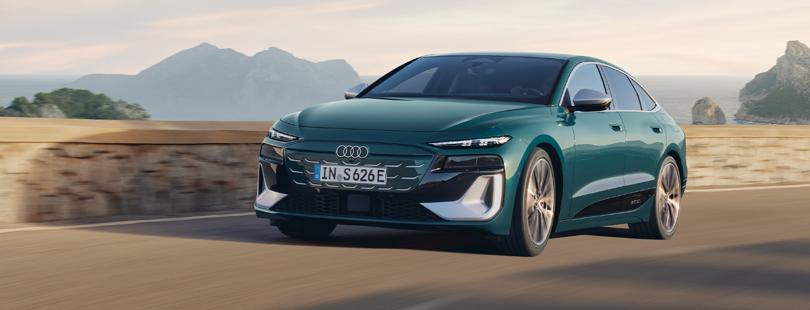

O novo Audi S6 Sportback e-tron. Desportividade progressiva acentuada com desempenho totalmente elétrico. Design revolucionário da Audi com foco na aerodinâmica e inovações digitais.
Experimente uma aceleração silenciosa com uma potência até 370 kW. O sistema de controlo do arranque permite uma potência temporária de curto prazo de até 405 kW, com aceleração máxima de zero dos 0 aos 100 km/h em menos de 3,9 segundos.
O novo Audi S6 Sportback e-tron em Malpelo Blue Metallic reflete o seu caráter desportivo para o mundo exterior – com elementos específicos S, como emblemas e para-choques, bem como detalhes em cromado.
